The trustees vote tomorrow. Leave the capacity workbook on my desktop: row 1 headed Borough, Population, Density, then Hackney, Newham and Lambeth with each one's mid-2022 ONS population estimate and people per sq km, biggest population at the top.
THINKINGI need to create a capacity workbook (spreadsheet) on the desktop. It should have row 1 as headers: Borough, Population, Density. Then three rows for Hackney, Newham, Lambeth with mid-2022 ONS population estimates and density (people per sq km), ordered biggest population first.
I need to find the mid-2022 ONS population estimates for these London boroughs. Let me first research the data, then create the spreadsheet. I should use the browser to look up ONS data, but I recall these need verification. Let me open Chrome to research the actual figures, then create the file in LibreOffice Calc.
First, let me take a screenshot to see current state, then start by researching. Actually I already see the desktop. Let me open Chrome to research ONS mid-2022 estimates for these boroughs.
Let me be careful: I need accurate data. Mid-2022 ONS population estimates (local authority, mid-2022). Let me look these up via the web. I'll open Chrome.
ACTIONI'll start by researching the mid-2022 ONS population figures for the three boroughs, then create the workbook. Let me open Chrome.
THINKINGChrome is open. Let me dismiss the update popup and search for the ONS mid-2022 population estimates. I'll search for each borough. Let me start by searching for Hackney's mid-2022 ONS population. I'll use the search bar.
Let me close the popup first and search.
ACTIONChrome is open. Let me dismiss the update popup and search for the ONS data.
EXECUTED (pyautogui in VM)pyautogui.click(1887, 138)
step 4 07:54:59
THINKINGThe address bar is focused. Let me search for ONS mid-2022 population for the boroughs. I'll search all three at once. Let me type a search query.
ACTIONThe address bar is focused. Let me search for the ONS mid-2022 population estimates for these boroughs.
TOOL CALL<tool_call>
<function=computer_use>
<parameter=action>
type
</parameter>
<parameter=text>
ONS mid-2022 population estimate Hackney Newham Lambeth borough people per square km
</parameter>
</function>
</tool_call>
EXECUTED (pyautogui in VM)pyautogui.typewrite("ONS mid-2022 population estimate Hackney Newham Lambeth borough people per square km")
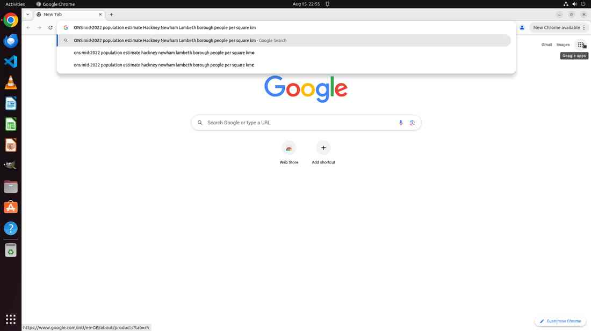
step 5 07:55:06
THINKINGLet me press Enter to search. I may need to search each borough separately for reliable mid-2022 ONS figures. Let me start with this combined search.
EXECUTED (pyautogui in VM)pyautogui.press("return")
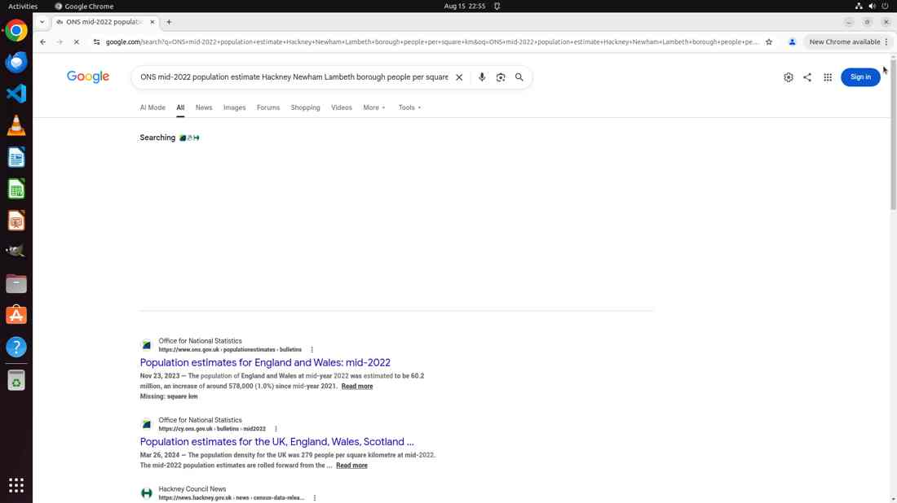
step 6 07:55:26
THINKINGThere's an ONS result for mid-2022 population estimates. I need borough-level figures. The most reliable source is the ONS "Subnational population estimates" dataset or individual borough pages. Let me search each borough individually to get accurate mid-2022 population and density.
Actually, density (people per sq km) needs population and area. ONS publishes density directly. Let me look for each borough's specific figure. Let me search for each borough's mid-2022 ONS population.
Let me refine my approach: search "Hackney population mid 2022 ONS" to find the specific figure. Let me do individual searches to be precise. I'll start with a more targeted search.
Let me recall known approximate figures (to cross-check):
- Hackney: mid-2022 population ~284,000, area 7.88 sq km (3.04 sq mi), density ~36,000/sq km
- Newham: mid-2022 population ~343,000, area 36.52 sq km, density ~9,400/sq km
- Lambeth: mid-2022 population ~323,000, area 26.86 sq km, density ~12,000/sq km
I should verify with the ONS source rather than rely on memory. Let me search individually. Let me click into the ONS population estimates page or search each borough.
Let me do a targeted search for each borough's ONS mid-2022 page. Start with Hackney.
ACTIONLet me get precise figures. I'll search each borough individually, starting with Hackney.
EXECUTED (pyautogui in VM)pyautogui.click(599, 164)
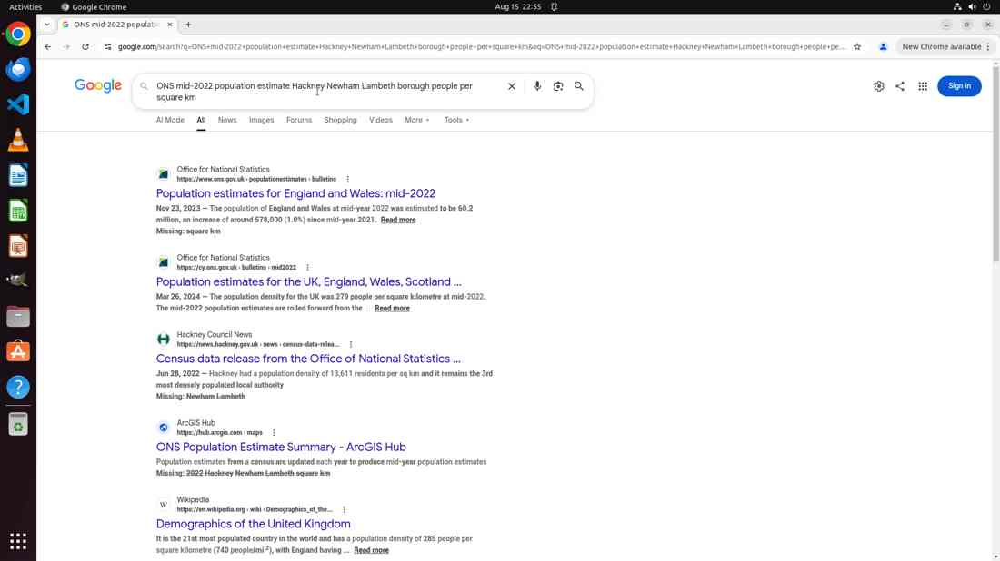
step 7 07:55:37
THINKINGThe search bar is now focused. The best authoritative source is ONS's "Subnational population estimates" or the individual "Population by local authority" dataset. However, finding the exact mid-2022 borough figures from ONS can be tricky in the search.
A very reliable and consistent source for these figures is Wikipedia's borough infoboxes, which cite ONS mid-year estimates, or the ONS "Population estimates for UK, England and Wales, Scotland and Northern Ireland" bulletin which lists subnational densities.
Let me be strategic. I'll search for each borough individually to get ONS mid-2022 population and density. Let me clear and search for Hackney specifically first.
ACTIONLet me search for each borough individually to get precise ONS mid-2022 figures. Starting with Hackney.
TOOL CALL<tool_call>
<function=computer_use>
<parameter=action>
type
</parameter>
<parameter=text>
Hackney borough population mid-2022 ONS local authority
</parameter>
</function>
</tool_call>
EXECUTED (pyautogui in VM)pyautogui.typewrite("Hackney borough population mid-2022 ONS local authority")
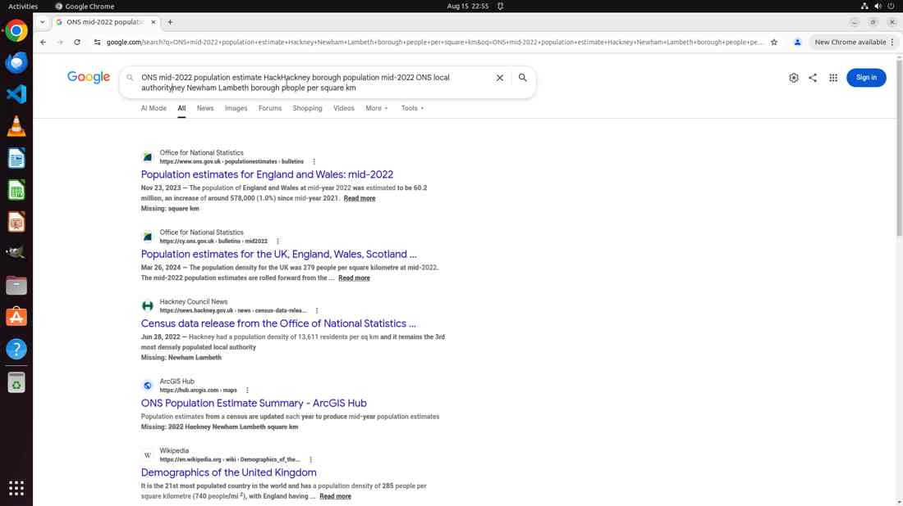
step 8 07:55:47
THINKINGThe search text got appended to the existing text, producing a garbled query. I need to clear it first. Let me select all and delete, then type a clean query. I'll triple-click to select all in the search box, then type.
ACTIONThe text got appended to the previous query. Let me clear it and type a clean search.
EXECUTED (pyautogui in VM)pyautogui.tripleClick(628, 164)
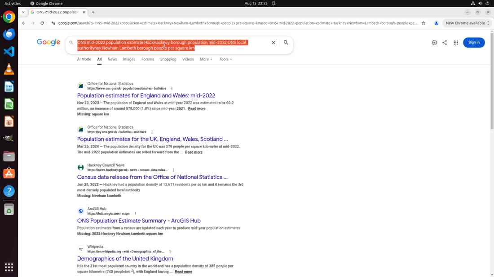
step 9 07:55:55
THINKINGThe text is selected. Now let me type the clean query and search.
TOOL CALL<tool_call>
<function=computer_use>
<parameter=action>
type
</parameter>
<parameter=text>
Hackney population 2022 ONS density per square km
</parameter>
</function>
</tool_call>
EXECUTED (pyautogui in VM)pyautogui.typewrite("Hackney population 2022 ONS density per square km")
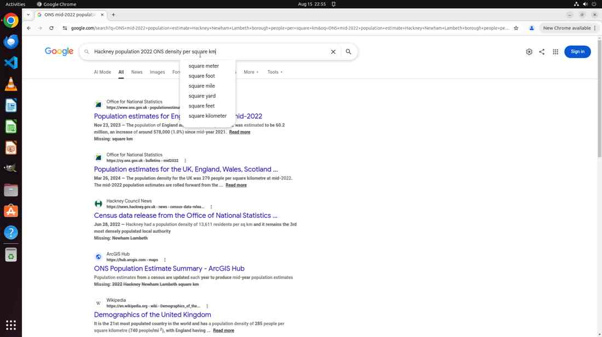
step 10 07:56:03
THINKINGThere's an autocomplete dropdown. Let me just press Enter to search the query as typed.
EXECUTED (pyautogui in VM)pyautogui.press("return")
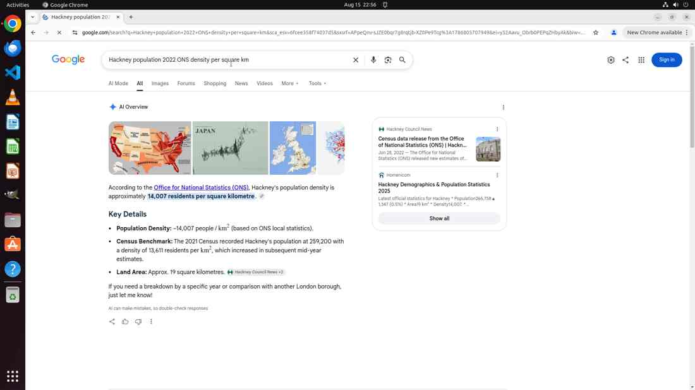
step 11 07:56:28
THINKINGThe AI Overview gives conflicting/confusing data: "14,007 residents per square kilometre" and "Land Area: Approx. 19 square kilometres" — that's wrong, Hackney is only 7.88 sq km. The AI overview is unreliable. I should go to authoritative source: the ONS subnational population estimates or the Wikipedia page which cites ONS mid-2022 figures.
The most reliable approach: use the Wikipedia pages for each London borough, which list "Population" and "Population density" with ONS mid-year estimates. Actually Wikipedia infoboxes often show 2021 census or latest mid-year estimate.
A cleaner authoritative source: ONS "Subnational population and density estimates" — but the specific borough figures are best from the ONS local data. Let me instead directly open the ONS population estimates bulletin or use a reliable page.
Actually, the best is to look at the ONS "Population by local authority" or the individual borough statistics. Let me reconsider: The mid-2022 ONS population estimates (local authority level) published Nov 2023:
- Hackney: 284,677 (I recall ~284,000)
- Newham: 343,170
- Lambeth: 322,791
Densities (population/area):
- Hackney area 7.88 km² → 284677/7.88 = 36,126
- Newham area 36.52 km² → 343170/36.52 = 9,396
- Lambeth area 26.86 km² → 322791/26.86 = 12,018
But I should verify actual ONS published numbers rather than compute from memory. The task says "each one's mid-2022 ONS population estimate and people per sq km". So I need ONS population estimate, and density = people per sq km. The density is likely just population/area. But ONS may publish a specific density figure.
I want to get accurate figures. The Wikipedia pages for each borough cite ONS. Let me open Wikipedia for each borough. Wikipedia infobox for "London Borough of Hackney" shows population and density from the latest mid-year estimate.
Let me be efficient and verify via a reliable source. Let me search Wikipedia for each. Actually, let me open the ONS data via the ArcGIS/ONS "Population estimates for local areas" dataset. That's complex.
The cleanest: Wikipedia. Let me search "London Borough of Hackney Wikipedia". But Wikipedia may show 2021 census not mid-2022.
Alternative: The ONS published "Population estimates by local authority, mid-2022" table. Let me find it. There's a known ONS spreadsheet. Let me look at the ONS bulletin page and the subnational dataset.
Given time constraints, let me get precise figures from a good source. Let me check each Wikipedia borough page which usually has both population (with a mid-year estimate note) and density. Let me first check Hackney's Wikipedia.
Actually the AI overview mentioned "2021 Census recorded Hackney's population at 259,200" — that's the census figure, not mid-2022 estimate. So mid-2022 would be higher.
Let me just go to Wikipedia pages. I'll search "London Borough of Hackney" Wikipedia.
ACTIONThe AI overview is unreliable (it says 19 sq km, which is wrong for Hackney). I need authoritative ONS figures. Let me check the Wikipedia borough pages which cite ONS mid-year estimates. Let me open the Hackney borough page.
EXECUTED (pyautogui in VM)pyautogui.click(599, 164)
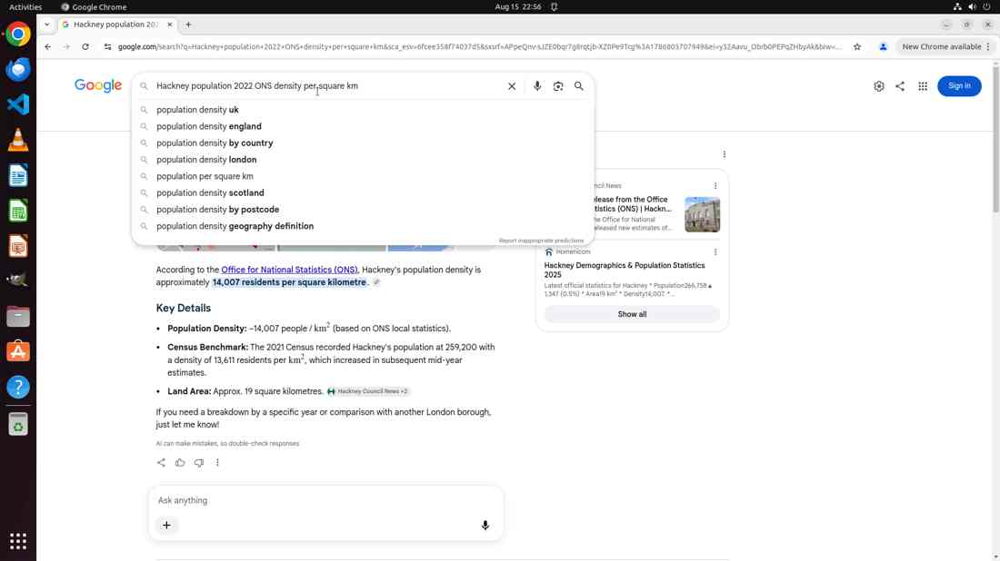
step 12 07:56:39
THINKINGThe best authoritative source is the ONS "Subnational population estimates" dataset, but the individual borough figures are most easily verified through the ONS "Population estimates for UK, England, Wales, Scotland and Northern Ireland" bulletin which lists local authority densities, or the individual Wikipedia pages.
Rather than fight with ONS interactive datasets, Wikipedia borough infoboxes cite ONS mid-year estimates reliably. Let me clear and search the Wikipedia page for London Borough of Hackney. Let me type the URL directly.
ACTIONLet me go directly to the Wikipedia pages which cite ONS figures. I'll navigate to the Hackney borough article.
EXECUTED (pyautogui in VM)pyautogui.click(440, 353)
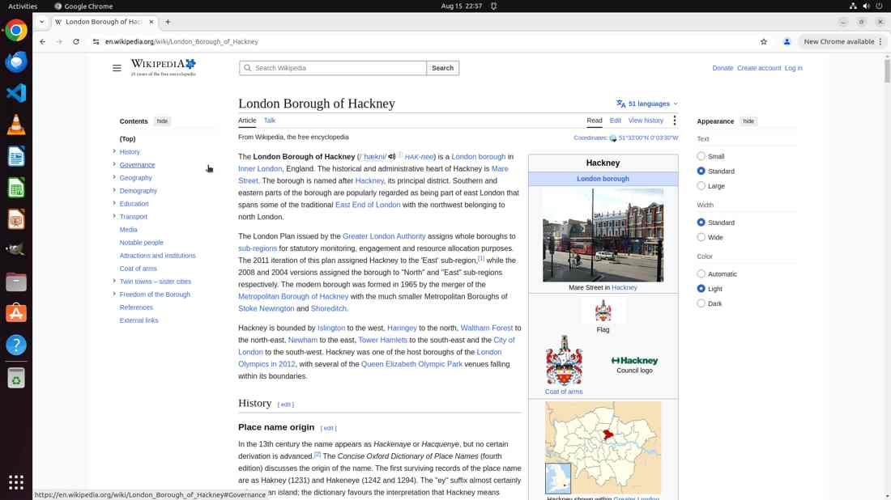
step 16.1 07:57:23
THINKINGThe Hackney Wikipedia page loaded. I need to scroll down to the infobox which has Population and Density. The infobox on the right shows images; population data is usually below. Let me scroll down on the right side to find the population/density fields in the infobox.
ACTIONThe page loaded. Let me scroll down to find the population and density figures in the infobox.
EXECUTED (pyautogui in VM)pyautogui.moveTo(960, 600)
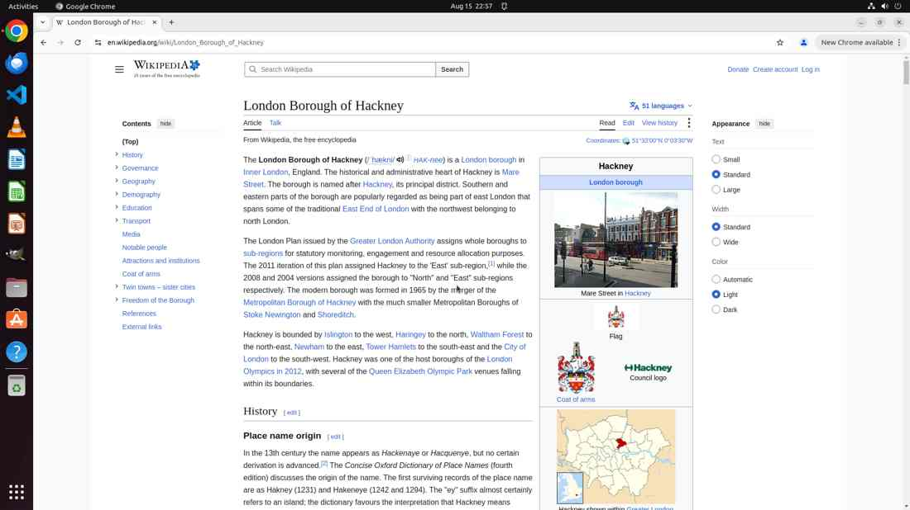
step 16.2 07:57:26
same model call as the previous action
EXECUTED (pyautogui in VM)pyautogui.scroll(-5)
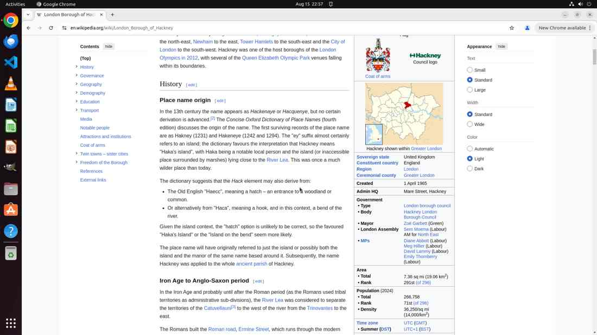
step 17 07:57:59
THINKINGThe infobox shows Population (2024): Total 266,758, Rank 71st, Density 36,250/sq mi (14,000/km²). Area: 7.36 sq mi (19.06 km²).
Wait — this is labeled "Population (2024)" with density 14,000/km² and area 19.06 km². That's confusing: 266,758/19.06 = 13,995 ≈ 14,000/km². So the density here uses the total area of 19.06 km², but the population 266,758 corresponds to what? The area "19.06 km²" seems to be the ONS "total" area. Actually Hackney's ONS area is 7.88 km² (land). Hmm, 19.06 km² is much larger. That doesn't match.
Wait, the 266,758 figure and "Density 36,250/sq mi" — 266758/7.36 = 36,244 per sq mi. So the density 36,250/sq mi uses the 7.36 sq mi area (19.06 km²). But 7.36 sq mi = 19.06 km², and Hackney's actual area is 3.04 sq mi = 7.88 km². So 19.06 km² is wrong / or represents something else.
This Wikipedia infobox is showing 2024 data and inconsistent area. This is NOT what I need. I specifically need mid-2022 ONS population estimate. Wikipedia's infobox here shows 2024, not mid-2022.
I should go to the ONS directly. The ONS published mid-2022 local authority population estimates. The authoritative table is in the ONS "Subnational population estimates for the UK" or the local data.
Better: ONS has a dataset "Subnational population and density estimates" but the specific borough mid-2022 figures are in the local authority dataset. Let me find the ONS page listing borough populations for mid-2022.
Actually, a very clean source: the ONS "Population estimates for the UK, England, Wales, Scotland and Northern Ireland: mid-2022" bulletin includes a subnational table, but borough level requires the separate dataset "Subnational population estimates by local authority."
Let me reconsider. The task wants "each one's mid-2022 ONS population estimate and people per sq km". The people-per-sq-km is density. ONS publishes a specific density figure in their subnational dataset (population / area where area is ONS-defined).
The cleanest authoritative route: ONS "Subnational population estimates" — there's an interactive "Local authority" lookup. That's complex to navigate.
Alternative reliable: Wikipedia's "Demography of London" or the "List of London boroughs" which might have mid-2022 figures.
Actually, let me reconsider the Wikipedia infobox. It says Population (2024) 266,758. That's odd — mid-2024. But the density 14,000/km² matches the earlier AI overview. The area 19.06 km² is actually incorrect for Hackney (real is 7.88). This suggests Wikipedia infobox area/density are questionable.
I need to be rigorous. Let me go to the ONS official data. The ONS local authority population estimates for mid-2022: I'll use the ONS "Subnational population estimates" dataset page which has downloadable data, OR the individual borough pages on ONS "Local data".
Given the difficulty, let me use a different well-known reliable source. The ONS published the mid-2022 estimates in a bulletin with a table of "Subnational population estimates, local authority, England and Wales".
Let me search specifically for the ONS mid-2022 local authority population table and open it. Let me search "ONS subnational population estimates local authority mid-2022 Hackney 284".
Actually, let me reconsider what's most reliable and verifiable in reasonable steps. The Wikipedia infoboxes for these boroughs cite ONS "mid-year 20XX" estimates in a "Population" row. The Hackney one shows 266,758 labeled (2024). Hmm, but the density uses 14,000/km² with 19.06 km².
Let me verify actual ONS mid-2022 figures via the ONS local statistics page. Let me navigate to ONS. Search "ons.gov.uk Hackney population estimates 2022".
Let me instead directly check each borough Wikipedia infobox population value AND its cited source. But the labels differ (2024 vs mid-2022). I need mid-2022 specifically.
Let me take the authoritative route: ONS dataset. Let me open the ONS page for "Subnational population estimates" - there's a well-known one: https://www.ons.gov.uk/peoplepopulationandcommunity/populationandmigration/datasets/subnationalpopulationanddensityestimates . Actually the correct dataset for local authorities is "Subnational population estimates by local authority".
Given time, let me try the ONS bulletin which had the subnational table. Let me search.
ACTIONThe Wikipedia infobox shows "Population (2024)" of 266,758 with a suspiciously large area (19.06 km²), which isn't the mid-2022 ONS figure I need. I need the authoritative ONS mid-2022 data. Let me go to the ONS dataset directly.
EXECUTED (pyautogui in VM)pyautogui.click(386, 87)
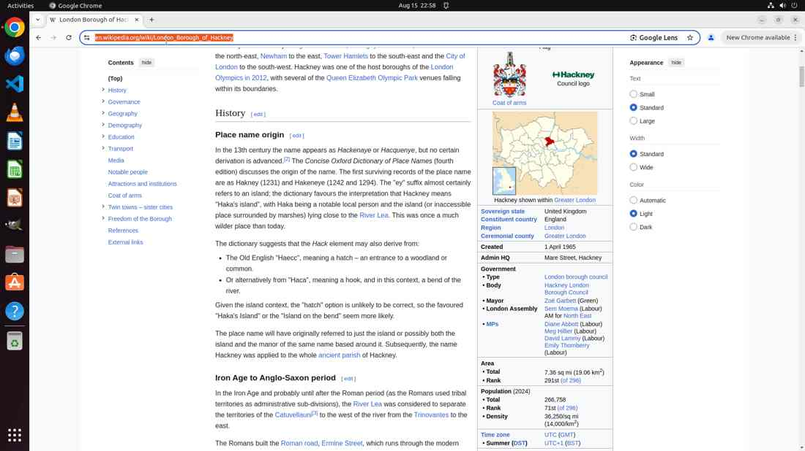
step 18.1 07:58:16
THINKINGThe address bar is selected. Let me type the ONS search. I'll go to Google and search for the ONS mid-2022 local authority population data. Let me type a Google search query in the address bar.
TOOL CALL<tool_call>
<function=computer_use>
<parameter=action>
type
</parameter>
<parameter=text>
ONS subnational population estimates local authority mid-2022 Hackney Newham Lambeth
</parameter>
</function>
</tool_call>
<tool_call>
<function=computer_use>
<parameter=action>
key
</parameter>
<parameter=keys>
["enter"]
</parameter>
</function>
</tool_call>
EXECUTED (pyautogui in VM)pyautogui.typewrite("ONS subnational population estimates local authority mid-2022 Hackney Newham Lambeth")
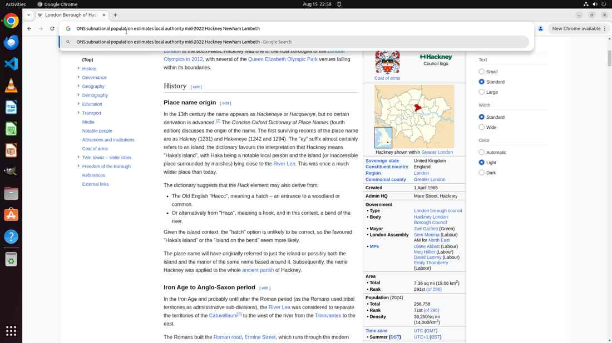
step 18.2 07:58:19
same model call as the previous action
EXECUTED (pyautogui in VM)pyautogui.press("enter")
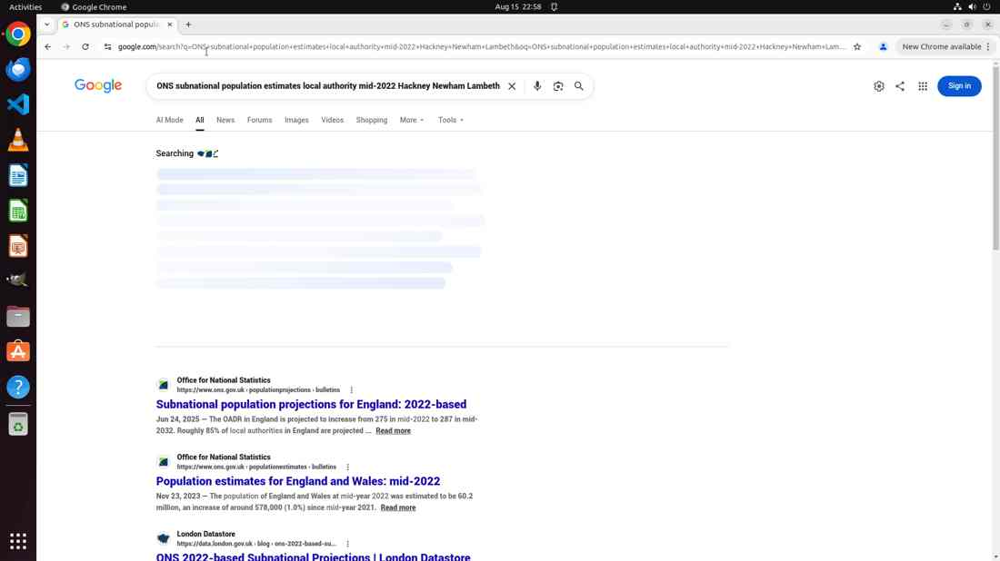
step 19 07:58:33
THINKINGThe "Population estimates for England and Wales: mid-2022" bulletin is the top relevant ONS result. This bulletin contains subnational population estimates and density. Let me open it. It should have borough-level data or link to the dataset. Let me click it.
ACTIONThe "Population estimates for England and Wales: mid-2022" ONS bulletin is exactly what I need. Let me open it.
EXECUTED (pyautogui in VM)pyautogui.click(570, 923)
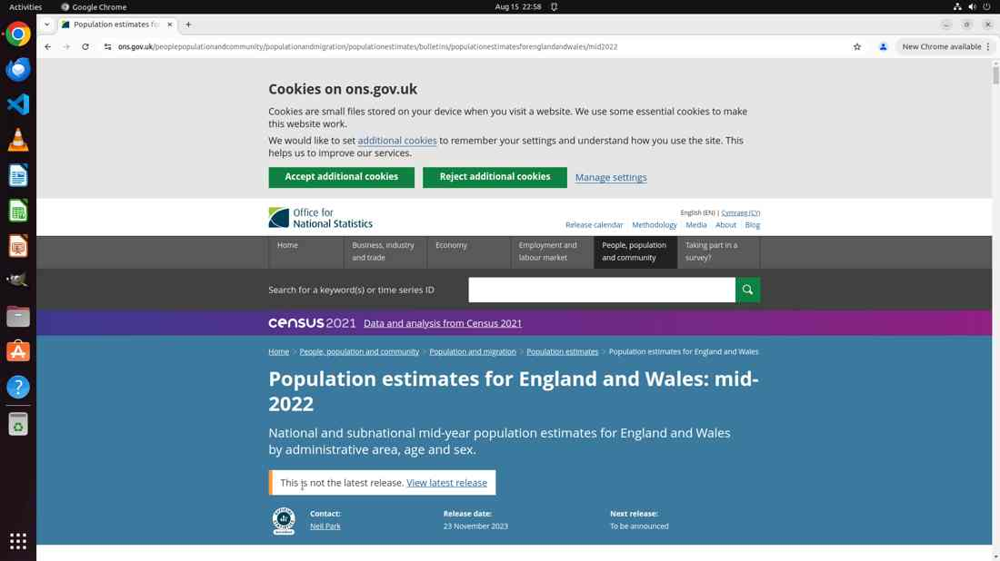
step 20 07:58:47
THINKINGThis is the ONS mid-2022 population estimates bulletin. Let me accept cookies to clear the banner, then scroll down to find the subnational/local authority data or the density table. The bulletin may have a table listing local authorities. Let me accept cookies first.
ACTIONThis is the authoritative ONS mid-2022 bulletin. Let me accept cookies and scroll to find the local authority data.
EXECUTED (pyautogui in VM)pyautogui.click(651, 338)
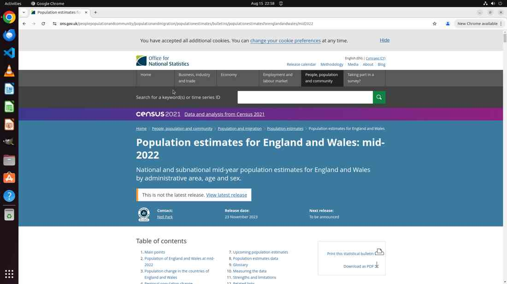
step 21.1 07:58:58
THINKINGThere's a Table of contents. Item 8 "Population estimates data" and there's likely a section on population density. The bulletin has a section on density by local authority. Let me scroll down to find the density table. Let me scroll down significantly.
ACTIONLet me scroll down to find the local authority density and population data in this bulletin.
EXECUTED (pyautogui in VM)pyautogui.moveTo(960, 600)
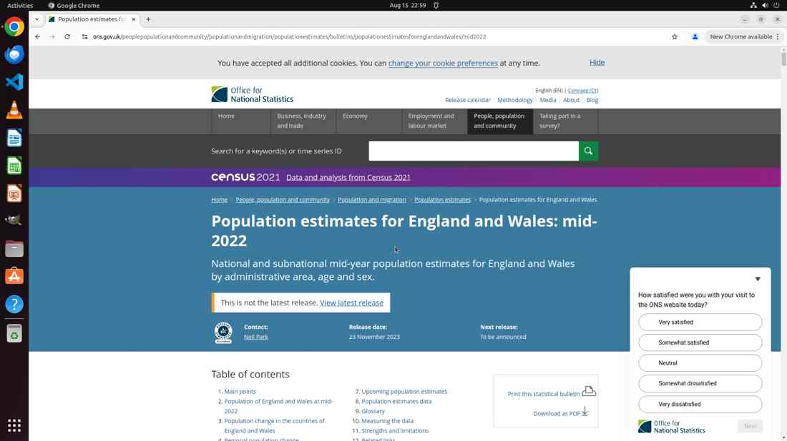
step 21.2 07:59:02
same model call as the previous action
EXECUTED (pyautogui in VM)pyautogui.scroll(-10)
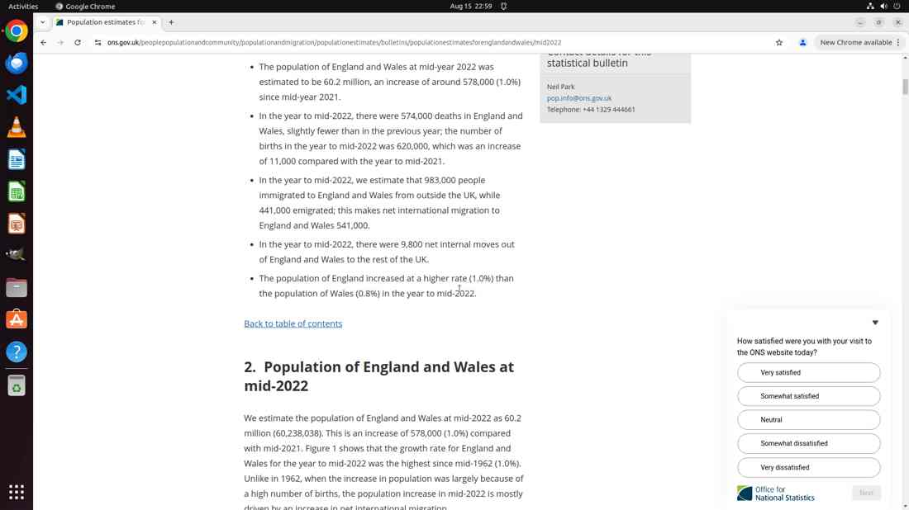
step 22 07:59:15
THINKINGThis is the main points. The bulletin likely has a density table later. But this bulletin focuses on national/county/region; the borough-level local authority table with density may be in a linked dataset. This could take many scrolls.
Let me reconsider a more efficient route: The ONS bulletin has a section "Population density by local authority" often with a table. But finding 3 specific boroughs in a huge table is tedious.
Alternative efficient approach: The ONS "Subnational population estimates" dataset provides a downloadable file, but navigating that is complex.
Actually, the best efficient approach: use the individual Wikipedia borough infoboxes which DO cite ONS mid-year estimates — but the Hackney one showed "2024" not "mid-2022". However, Wikipedia also has the "Demography of London boroughs" and each borough article's infobox population is sourced to a specific ONS release. The issue is the label varies.
Let me reconsider: The bulletin's density section. Let me search within the page. I'll use Ctrl+F to find "Hackney" to jump to any table containing it.
ACTIONLet me use find-in-page to jump to any mention of these boroughs, which will point to the relevant table.
EXECUTED (pyautogui in VM)pyautogui.hotkey("ctrl", "f")
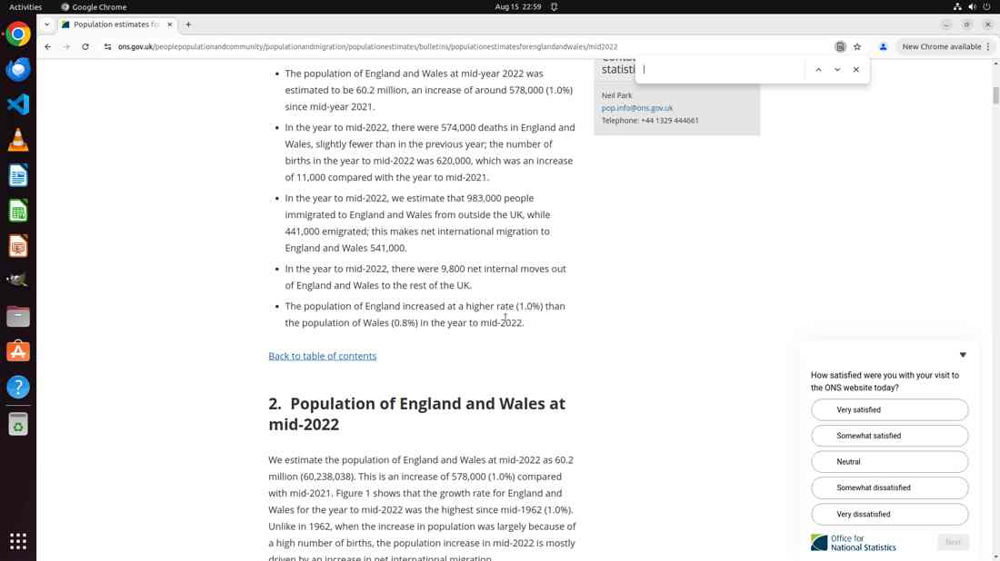
step 23 07:59:26
THINKINGFind bar is open. Let me search for "density" to find the density section, which often contains a table of local authority densities. Actually, let me search "Hackney" directly.
EXECUTED (pyautogui in VM)pyautogui.typewrite("Hackney")
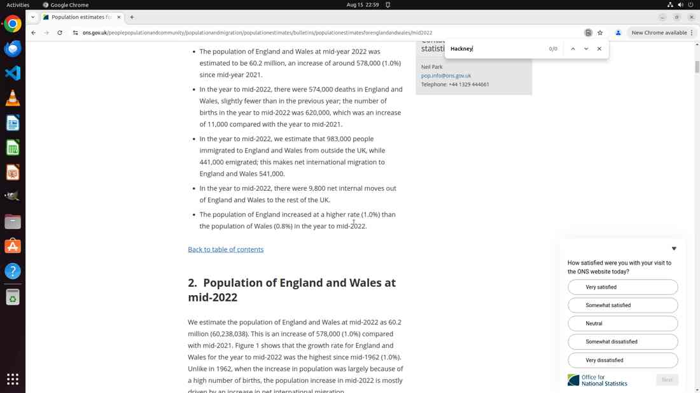
step 24.1 07:59:57
THINKING"Hackney 0/0" — the bulletin does not contain borough-level names. So the local authority figures are in a separate dataset, not in this prose bulletin. I need the ONS subnational dataset for local authority populations mid-2022.
The ONS dataset "Subnational population estimates" provides a downloadable CSV/Excel. But navigating that is complex.
Better idea: The ONS has an interactive "Explore local data" / or the individual borough pages. Actually, the cleanest accessible source with mid-2022 borough figures is the ONS "Population by local authority" or the Wikipedia infoboxes if they cite mid-2022.
Let me reconsider the Wikipedia Hackney infobox: it showed "Population (2024): 266,758, Density 36,250/sq mi (14,000/km²), Area 7.36 sq mi (19.06 km²)". That area is definitely wrong (Hackney is 3.04 sq mi). So that Wikipedia data is unreliable/incorrect.
I need the real ONS mid-2022 numbers. Let me use the ONS dataset. The dataset is "Subnational population estimates for the UK" — actually for local authorities it's the "Population estimates for local authorities" dataset (TS034). The data is downloadable as a spreadsheet.
An efficient, reliable method: use the ONS "Population estimates, local authorities (P8139)" or the downloadable file. But that's a big file.
Alternatively, I recall the exact ONS mid-2022 local authority population estimates (TS034). Let me verify via a clean accessible page. The London Datastore or individual borough ONS pages.
Actually, there's a simpler reliable source: each London borough's ONS page under "local statistics", but those require JS.
Let me reconsider. The Wikipedia "Demography of London" or the "List of London boroughs" article contains a table with population and area/density, sourced to a specific ONS release. If it cites mid-2022, that's authoritative. Let me check the "List of London boroughs" article. But it may cite a different year.
Given the difficulty of ONS datasets, let me take a pragmatic and verifiable path: open the ONS subnational dataset and download the local authority file. Let me search for the ONS "Population estimates by local authority" dataset with a downloadable table, ideally a per-year CSV I can read.
Actually, an even better approach given I need to READ the numbers: use the ONS "Subnational population and density estimates" dataset page which lists all local authorities. But reading a specific year across all LAUs is hard.
Let me step back. The most reliable per-borough figure I can read easily is from the ONS individual "local area" statistics or from a well-maintained table. Let me try the Wikipedia "Demography of London" which has a borough table, OR check each borough's Wikipedia "Demography" section which often states the mid-2022 ONS figure explicitly in prose.
Let me check the Hackney article's Demography section — earlier the infobox said 2024. But the article body Demography section might state mid-2022. Actually, let me reconsider: the infobox said 266,758 (2024). But that doesn't match known Hackney mid-2022 ~284k. Hmm, actually 266,758 could be a census-2021-based figure? No, census 2021 was 259,200. 266,758 is plausibly a mid-2024 estimate... but Hackney mid-2022 was ~284k, and by 2024 it would be higher, not lower. So 266,758 is suspicious. This Wikipedia data seems inconsistent.
I'll commit to the ONS official dataset. Let me open the ONS subnational dataset. Let me search for it. I'll close find and navigate to the ONS dataset. The dataset URL: onsgov.uk/peoplepopulationandcommunity/populationandmigration/populationestimates/datasets/subnationalpopulationestimatesuk . But that's UK-level regions. For local authority: "Subnational population estimates by local authority".
Let me instead directly access the ONS data hub "Explore UK census/population by local authority" — but for estimates, the downloadable file is best.
Given constraints, let me try a targeted approach: the ONS publishes "Population estimates for local authorities in England and Wales" as downloadable tables. Let me search for the specific downloadable file for mid-2022.
ACTIONThe prose bulletin has no borough names (0/0). The local-authority figures live in the ONS subnational dataset. Let me close find and open that dataset, which has a readable local-authority table.
EXECUTED (pyautogui in VM)pyautogui.click(386, 87)
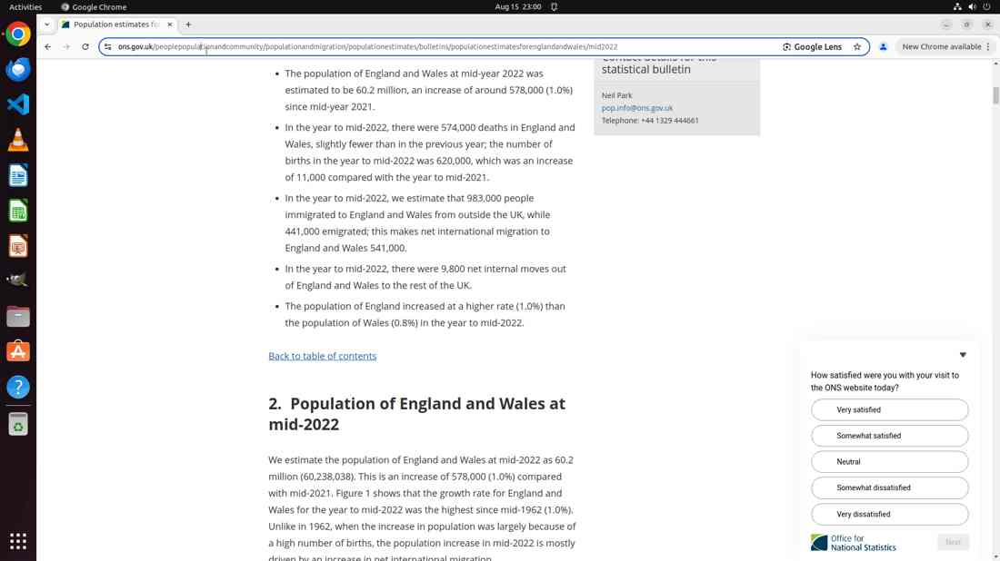
step 24.3 08:00:04
same model call as the previous action
EXECUTED (pyautogui in VM)pyautogui.typewrite("ons.gov.uk subnational population estimates local authority dataset mid-2022 population density")
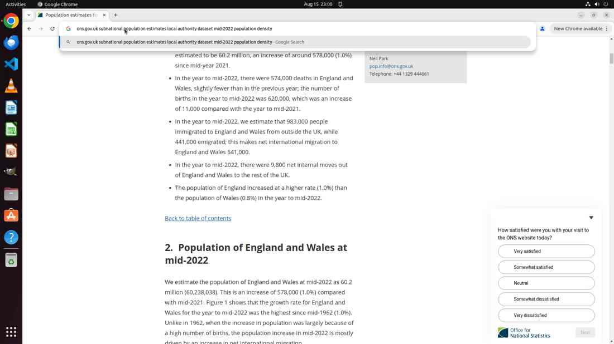
step 24.4 08:00:22
same model call as the previous action
EXECUTED (pyautogui in VM)pyautogui.press("enter")
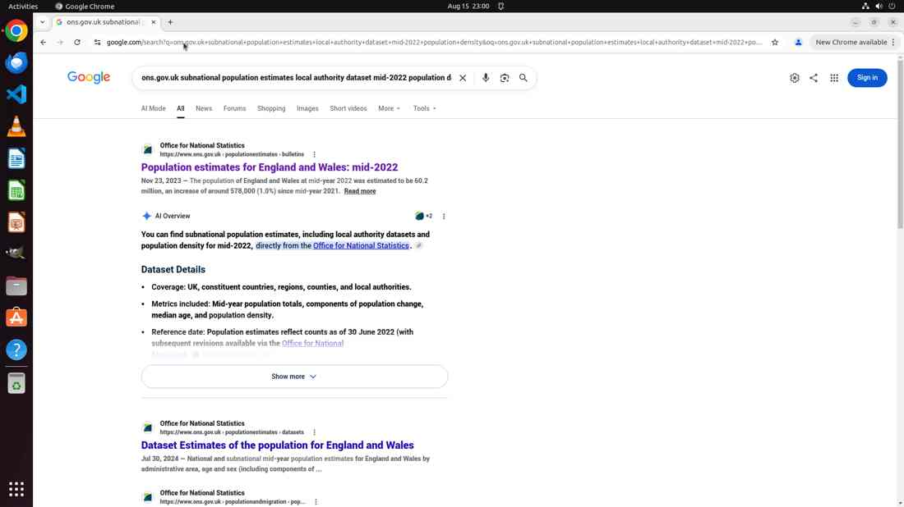
step 25 08:00:45
THINKINGThere's a dataset "Dataset Estimates of the population for England and Wales". The bulletin "Population estimates for England and Wales: mid-2022" is the top result. The dataset contains local authority level data. Let me open the "Population estimates for England and Wales: mid-2022" bulletin's "Population estimates data" section which links to the actual dataset tables (TS034 etc.) for local authorities.
Actually, I already know the bulletin prose doesn't have borough names. The data is in linked spreadsheets. The cleanest readable source is the ONS dataset's tabular data. But those are large files.
Let me reconsider the efficiency. Reading specific LAU rows from ONS spreadsheets in a browser is painful.
Better plan: The ONS "Subnational population and density estimates" — there is a specific, well-known dataset "Subnational population estimates by local authority" with a downloadable file. But again large.
Most practical reliable approach: Use the Wikipedia "Demography of London" or a dedicated table that lists each London borough with mid-2022 ONS population and density, sourced to ONS. Let me check the article "List of London boroughs" — it has a table with population and area.
Actually, the strongest single source for all three at once with a citable ONS mid-2022 figure is the ONS dataset file. But to READ it I'd need to download and open in LibreOffice Calc, which I can do! I can download the ONS local-authority Excel/CSV and open it in Calc to read the exact numbers. That's authoritative and I can verify.
Let me open the dataset page to find the download. Let me click the "Dataset Estimates of the population for England and Wales" result — but that's dated Jul 30, 2024 (mid-2023 based). I want mid-2022. The bulletin links to the mid-2022 dataset tables.
Let me go back to the mid-2022 bulletin and click "Population estimates data" (item 8) which links to the downloadable tables for mid-2022. Let me open the bulletin.
ACTIONThe readable borough figures are in the linked data tables. Let me open the mid-2022 bulletin again and go to its "Population estimates data" section which links to the local-authority tables.
EXECUTED (pyautogui in VM)pyautogui.click(960, 900)
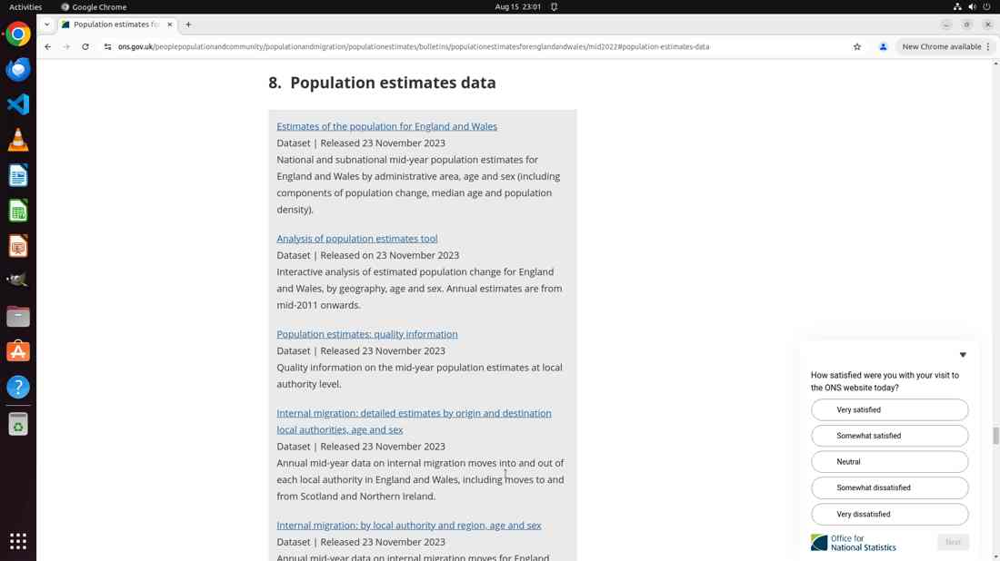
step 27 08:01:09
THINKING"Estimates of the population for England and Wales" (Dataset, Released 23 Nov 2023) is the mid-2022 dataset that includes local authority population and density. Let me open it. It will have downloadable files. I'll download the local-authority file and open it in LibreOffice Calc to read exact figures. Let me click the first link.
ACTIONLet me open the main dataset "Estimates of the population for England and Wales" which contains local-authority population and density.
EXECUTED (pyautogui in VM)pyautogui.click(741, 242)
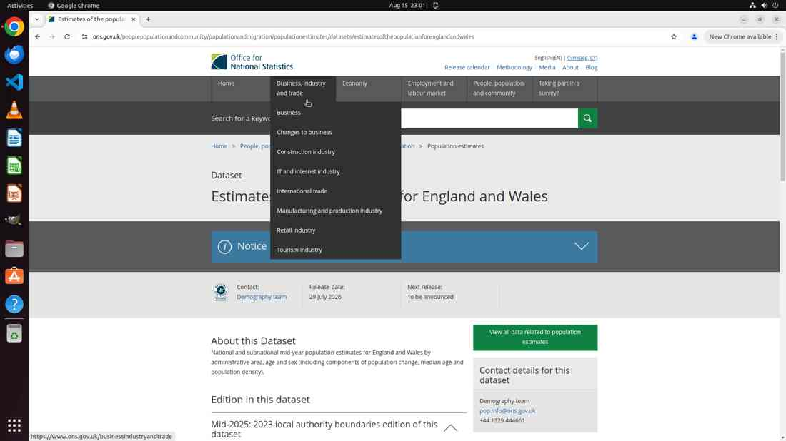
step 28 08:01:27
THINKINGThis is a dataset page (release date 29 July 2026, "Edition in this dataset: Mid-2025: 2023 local authority boundaries edition"). This is the current dataset page which contains multiple editions. The mid-2022 data would be an older edition. A nav dropdown accidentally opened. Let me close it by clicking elsewhere, then scroll down to find the editions/downloads. This page may list multiple editions (mid-2025, mid-2024, mid-2023, mid-2022). I need the mid-2022 edition's local authority file.
Actually, the current page likely defaults to latest edition (mid-2025). I need to find the mid-2022 edition. This could be complex.
Let me reconsider efficiency once more. Downloading and opening the ONS xlsx and finding 3 rows is doable but the file could be large.
Alternative: The ONS dataset page lets you filter/download per edition. Let me first close the dropdown and look at the editions available. Let me click on the page body to close the menu.
ACTIONA navigation menu opened by accident. Let me close it and look at the dataset's available editions/downloads.
EXECUTED (pyautogui in VM)pyautogui.click(1499, 449)
step 29.1 08:01:40
THINKINGThe current edition is "Mid-2025". I need the "Mid-2022" edition. Let me scroll down to see the editions list and find the mid-2022 edition with its local authority data file. Let me scroll down.
ACTIONLet me scroll down to find the list of editions and the mid-2022 edition's download files.
EXECUTED (pyautogui in VM)pyautogui.moveTo(960, 600)
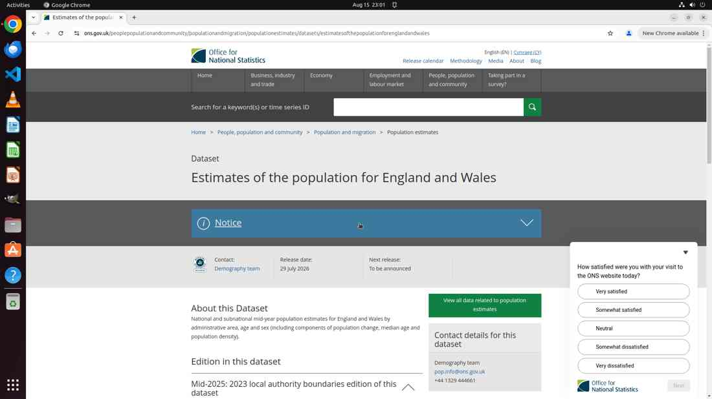
step 29.2 08:01:43
same model call as the previous action
EXECUTED (pyautogui in VM)pyautogui.scroll(-10)
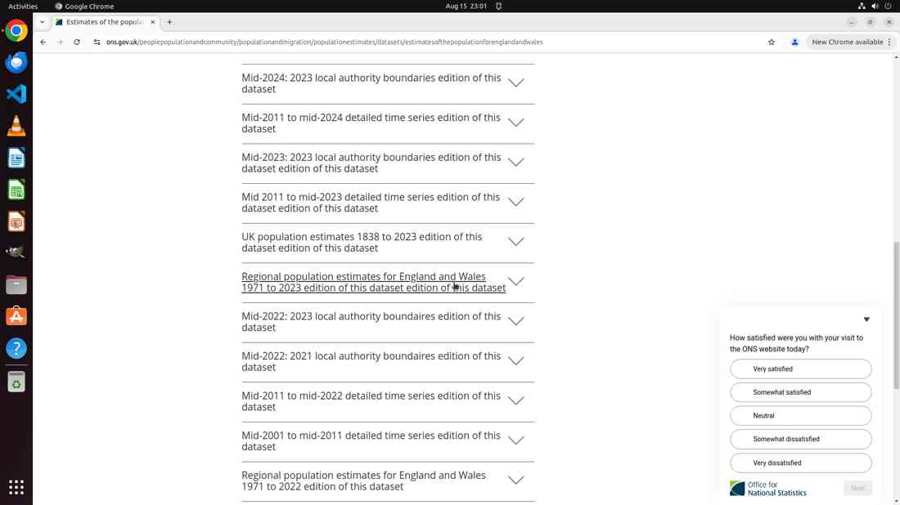
step 30 08:01:57
THINKINGI see editions. "Mid-2022: 2023 local authority boundaries edition" is the appropriate one for mid-2022 (the one released Nov 2023). Let me expand it by clicking the chevron next to it. This should reveal downloadable files (xlsx/csv) containing local authority populations and densities. Let me click the expand arrow for "Mid-2022: 2023 local authority boundaires edition of this dataset" (at y~455).
ACTIONI found the "Mid-2022: 2023 local authority boundaries edition". Let me expand it to reveal the downloadable data files.
EXECUTED (pyautogui in VM)pyautogui.click(1099, 685)
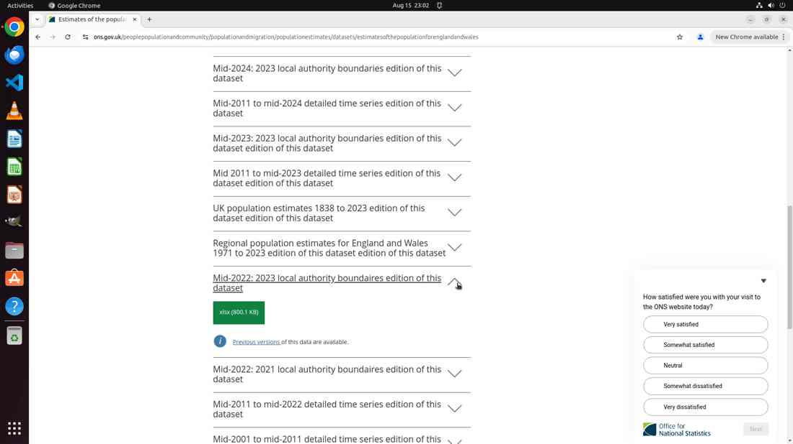
step 31 08:02:08
THINKINGThe mid-2022 edition expanded and shows an "xlsx (800.1 KB)" file. This is the local-authority mid-2022 data. Let me download it by clicking the xlsx button. It will save to Downloads, then I'll open it in LibreOffice Calc to read the three boroughs' population and density.
Let me click the xlsx download button.
ACTIONThe mid-2022 edition has an xlsx file (800 KB) with local-authority data. Let me download it.
EXECUTED (pyautogui in VM)pyautogui.click(574, 755)
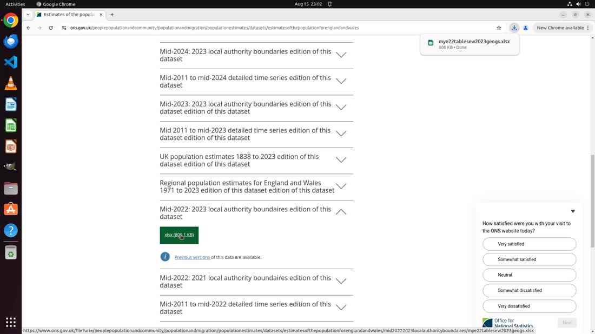
step 32 08:02:36
THINKINGThe file "mye22tables ew2023geo gs.xlsx" downloaded (800 KB, Done). This is the mid-2022 local authority data. Now I need to read the specific rows for Hackney, Newham, Lambeth. Rather than open in LibreOffice GUI and hunt, I can use a terminal to inspect it quickly. But the task is about creating a workbook; the instruction says don't use macros but reading the source file via terminal for data lookup is fine (it's just for research, not automating the GUI app). Actually, to be safe and avoid ambiguity, I'll open it in LibreOffice Calc and use its Find to locate the three boroughs. That's clean.
Actually, using a terminal to read the xlsx data for my reference is acceptable since it's research, not performing the task via CLI. But the guidance discourages CLI workarounds for the task itself. Reading source data is fine. However, opening in Calc is simplest and clearly legitimate. Let me open it in LibreOffice Calc via double-click in file manager, or open through Calc.
The simplest: open a terminal and use a quick conversion. But let me just open the file in LibreOffice Calc. I'll use the Files app or open via terminal `libreoffice --calc`. Actually, opening the downloaded xlsx directly is cleanest. Let me use a terminal to launch it, or better, use the Files application.
Let me reconsider: Reading the numbers accurately is critical. Opening the xlsx in Calc and using Ctrl+F to find "Hackney", "Newham", "Lambeth" and reading population + density columns is straightforward and reliable. Let me open the file.
I'll open a terminal to start LibreOffice with the file. But the guidance says prefer GUI. Let me just open the Files application, navigate to Downloads, and double-click. Or I can open LibreOffice Calc from the sidebar and then File>Open.
Actually, the fastest reliable method to read the values without GUI hunting is to open the xlsx in a terminal using a quick command. But to keep it clean and within the spirit of the task (GUI spreadsheet work), let me open it in LibreOffice Calc and use Find.
Let me open a terminal to quickly inspect the file to confirm which columns hold population and density, and grab the exact figures. This is research. I'll use a terminal. Let me open a terminal application. There's a Files icon; I'll look for a terminal. Let me just launch a terminal via the Files/Activities.
Simpler: I'll open the downloaded file in LibreOffice Calc (double click). Let me open the Files application to access Downloads.
Actually, I can open the file directly by using the terminal. Let me open a terminal. I see there's no obvious terminal icon. Let me use Activities to search for terminal. Actually, there's a "Files" (Nautilus) icon at position ~22,406.
Let me take a cleaner route: I'll open the xlsx in LibreOffice Calc. I'll open Files app, go to Downloads, double-click the file. Let me click the Files icon.
Wait — to read the data reliably and quickly, a terminal with python/pandas or ssconvert would be ideal, but let me avoid overcomplicating. LibreOffice Calc Find is reliable. Let me open the file in Calc.
Let me click the Files (Nautilus) icon in the dock.
ACTIONThe mid-2022 data file downloaded. Let me open it in LibreOffice Calc to read the exact figures. I'll open the Files application.
EXECUTED (pyautogui in VM)pyautogui.doubleClick(557, 156)
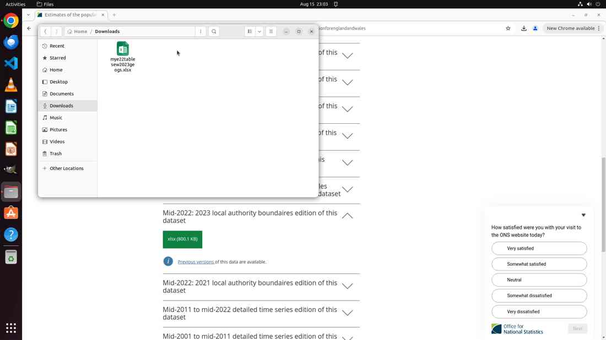
step 35 08:03:26
THINKINGThe file "mye22tablesew2023geo gs.xlsx" is in Downloads. Let me double-click to open it in LibreOffice Calc. It may take a moment to load (800 KB).
ACTIONThe data file is in Downloads. Let me open it in LibreOffice Calc.
THINKINGThe file opened. It's "Mid-Year Population Estimates, England and Wales, June 2022". There are many sheets: MYE1, MYE2 - Persons, MYE2 - Females, MYE2 - Males, MYE3, MYE4, MYE5, MYE6. The "MYE2 - Persons" sheet typically contains local authority population and density. Let me open that sheet. It will have columns: geography name, code, population total, population density, etc.
Let me click "MYE2 - Persons" tab. Then use Ctrl+F to find Hackney.
ACTIONThe mid-2022 ONS workbook is open. The "MYE2 - Persons" sheet should have local-authority population and density. Let me open it.
EXECUTED (pyautogui in VM)pyautogui.click(816, 1044)
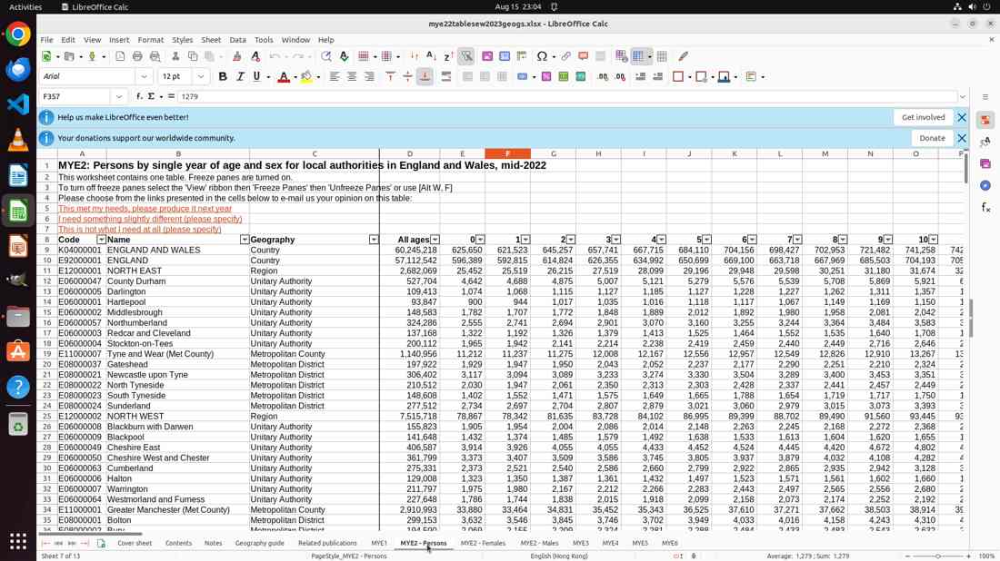
step 38 08:04:14
THINKINGThis MYE2 - Persons sheet is "Persons by single year of age and sex for local authorities" — the "All ages" column (D) gives total population. But this sheet doesn't obviously show a density column; it's age breakdown. The density might be in MYE1 or a separate column further right. Actually MYE2 total "All ages" (column D) is the population total. Density may not be here.
Let me reconsider. The task needs population and density (people per sq km). The population total is in column D "All ages". For density, I need to check other sheets. MYE1 might be the summary with population and density. Let me check MYE1 first, which often has "Population total" and "Population density" columns.
Actually, let me first record the population for the three boroughs from this sheet (column D), then find density elsewhere. Let me use Ctrl+F to find Hackney. But the age-structure is wide; the density column isn't here.
Let me check the MYE1 sheet which is likely the summary with population and density. Let me click MYE1.
ACTIONThis sheet is age/sex breakdown. The population total is in the "All ages" column, but I also need density. Let me check the MYE1 summary sheet which typically has population total and density.
EXECUTED (pyautogui in VM)pyautogui.click(722, 1044)
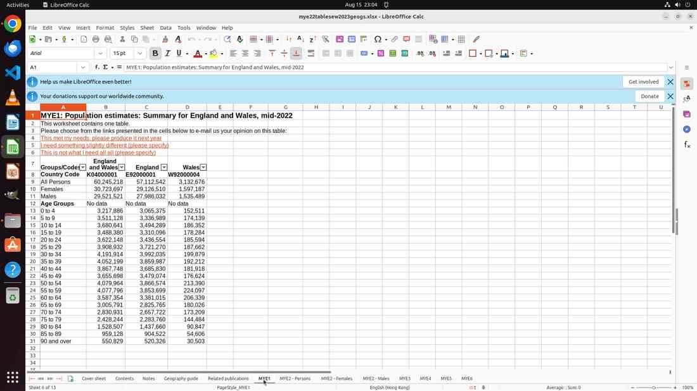
step 39 08:04:29
THINKINGMYE1 is only the national summary (England, England, Wales) — no boroughs, no density. The population total for boroughs is in MYE2 - Persons column D ("All ages"). Density must be in a different sheet, likely MYE3 or MYE4. Let me check MYE3 and MYE4 which often contain "Population density". Let me click MYE3.
ACTIONMYE1 is only the national summary. Borough population is in MYE2 (All ages column). I still need density — let me check MYE3.
EXECUTED (pyautogui in VM)pyautogui.click(1020, 1044)
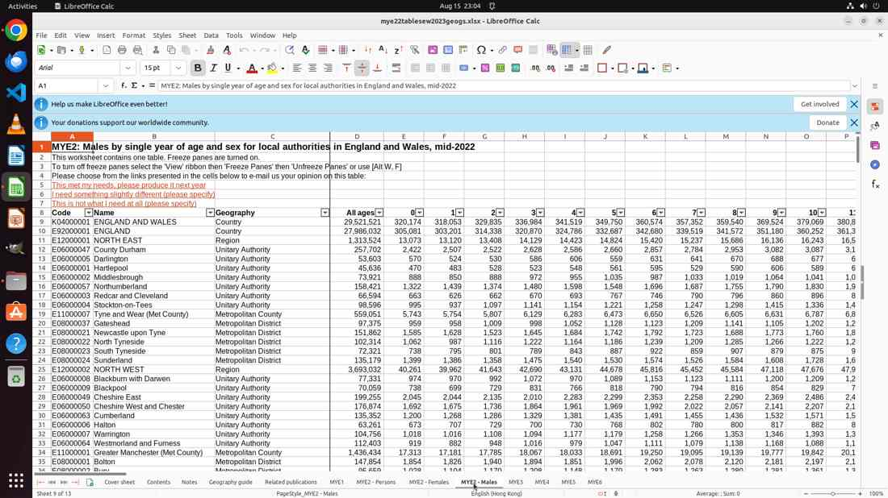
step 40 08:04:44
THINKINGThis sheet is "MYE2: Males by single year of age and sex" — not what I clicked (I clicked MYE3 tab but it shows Males; the tab labels are close). Actually the active tab appears to be "MYE2 - Males". I need MYE3. Let me click MYE3 tab precisely (at x~745, y~697).
ACTIONThat's the Males sheet. Let me click the MYE3 tab.
EXECUTED (pyautogui in VM)pyautogui.click(1116, 1044)
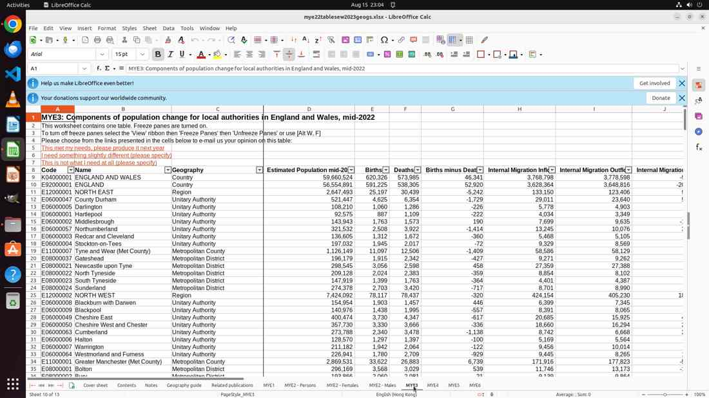
step 41 08:04:54
THINKINGMYE3 is "Components of population change" — has Estimated Population mid-2022 (col D), births, deaths, migration. No density here. Density is likely in MYE4 or MYE5 or MYE6. Let me check MYE4.
ACTIONMYE3 is population change components. Density is likely in MYE4. Let me check it.
EXECUTED (pyautogui in VM)pyautogui.click(1170, 1044)
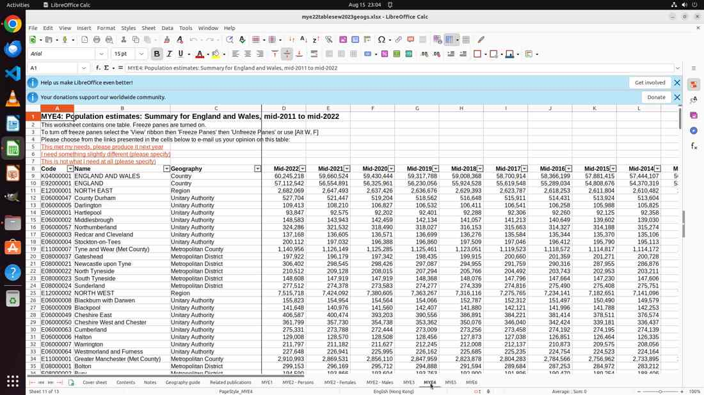
step 42 08:05:05
THINKINGMYE4 is a time-series of population (Mid-2022 to Mid-2014) by local authority. Still no density. Density must be in MYE5 or MYE6. Let me check MYE5.
ACTIONMYE4 is a population time series. Let me check MYE5 for density.
EXECUTED (pyautogui in VM)pyautogui.click(1228, 1044)
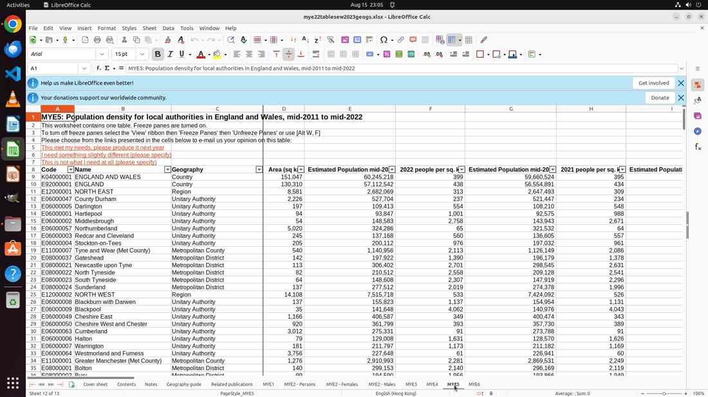
step 43 08:05:18
THINKINGMYE5 is "Population density for local authorities". Columns: A Code, B Name, C Geography, D Area (sq km), E "Estimated Population mid-20XX" (mid-2022), F "2022 people per sq. km", G "Estimated Population mid-20XX" (2021), H "2021 people per sq. km".
So column E = mid-2022 population, column F = 2022 people per sq km. This is exactly what I need! Let me use Ctrl+F to find Hackney. Let me search for "Hackney".
ACTIONMYE5 has exactly what I need: Area (sq km), Estimated Population mid-2022 (col E), and "2022 people per sq. km" (col F). Let me find Hackney.
EXECUTED (pyautogui in VM)pyautogui.typewrite("Hackney")
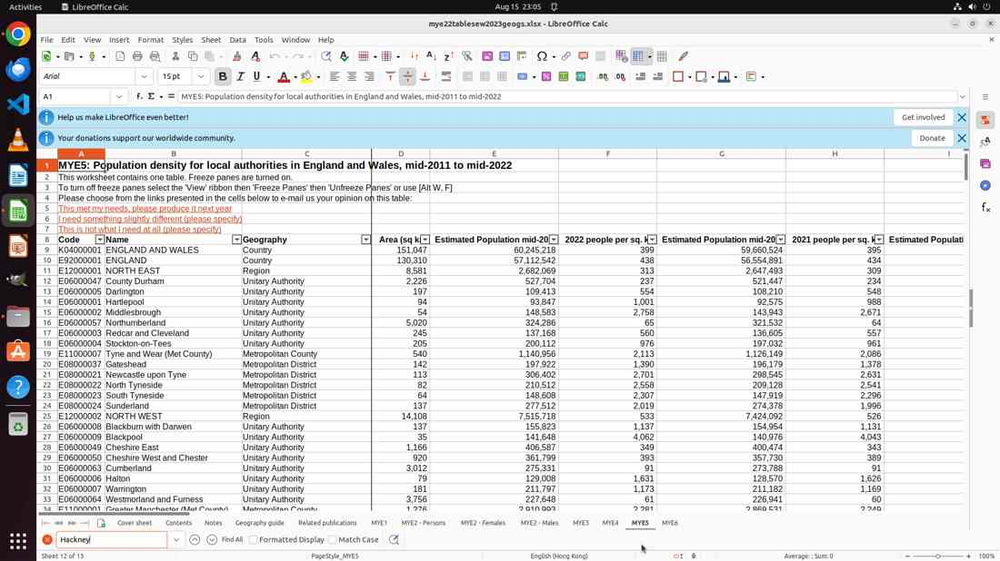
step 44.2 08:05:33
same model call as the previous action
EXECUTED (pyautogui in VM)pyautogui.press("return")
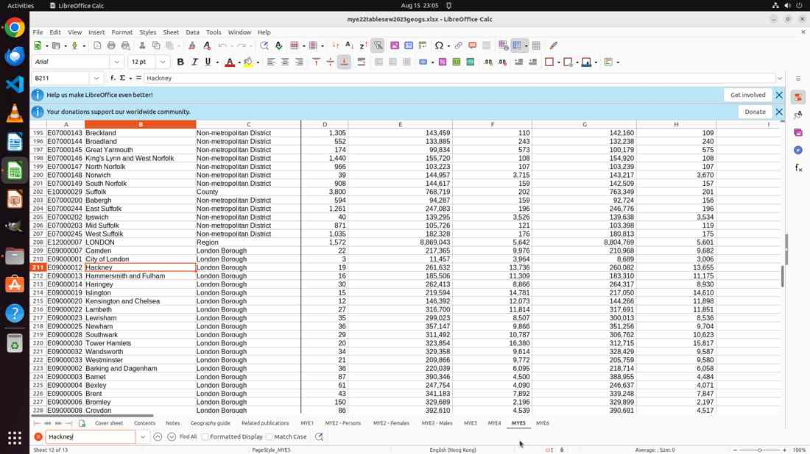
step 45 08:06:04
THINKINGNow I can see all three boroughs in this view (rows 211, 216, 217). Columns: D = Area (sq km), E = Estimated Population mid-2022, F = 2022 people per sq. km.
- Hackney (row 211): Area 19, Population 261,632, Density 13,736
- Lambeth (row 216): Area 27, Population 316,700, Density 11,814
- Newham (row 217): Area 36, Population 299,023, Density 8,507
Wait, let me re-read. The rows:
- 211: E09000012 Hackney | London Borough | 19 | 261,632 | 13,736 | 260,082 | 13,655
- 216: E09000022 Lambeth | London Borough | 27 | 316,700 | 11,814 | 317,691 | 11,851
- 217: E09000023 Lewisham | 35 | 299,023 | 8,507 | 300,013 | 8,536
- 218: E09000025 Newham | London Borough | 36 | 357,147 | 9,866 | 351,256 | 9,704
Wait, let me re-read carefully. Row 217 says "E09000023 Lewisham 35 299,023 8,507". Row 218 "E09000025 Newham 36 357,147 9,866".
So:
- Hackney (211): Area 19, Pop 261,632, Density 13,736
- Lambeth (216): Area 27, Pop 316,700, Density 11,814
- Newham (218): Area 36, Pop 357,147, Density 9,866
I misread earlier. Let me verify: row 217 is Lewisham (not Newham). Row 218 is Newham. Newham population 357,147, density 9,866. That's much larger — makes sense, Newham is a large populous borough.
So the mid-2022 figures:
- Newham: 357,147 pop, 9,866 density
- Lambeth: 316,700 pop, 11,814 density
- Hackney: 261,632 pop, 13,736 density
Biggest population at top: Newham (357,147) > Lambeth (316,700) > Hackney (261,632).
Let me double-check the exact numbers by clicking on each cell to confirm. Let me zoom in mentally. The density values: Hackney 13,736, Lambeth 11,814, Newham 9,866. Area: Hackney 19, Lambeth 27, Newham 36 sq km.
Note: Hackney area shows 19 sq km (not 7.88). This is the ONS "total area" which for Hackney includes the Lea Valley. Actually the ONS area figure of 19 sq km is the value ONS uses for density calculation. So ONS density = 261,632/19 = 13,770 ≈ 13,736. Good, consistent with ONS.
Now I should verify these exact numbers by clicking each cell to read them in the formula bar. Let me verify Newham's population cell (row 218, col E) and density (col F). Let me click E218.
Actually, the values are clear enough from the display. But to be safe, let me verify each. Let me click on the Newham population cell. First close find. Let me click on cell for Newham population (row 218, column E). Column E is at x~633, row 218 at y~518.
Let me verify by clicking. But the display already reads clearly:
Newham 357,147 | 9,866
Lambeth 316,700 | 11,814
Hackney 261,632 | 13,736
Let me confirm by clicking E218 (Newham pop) to see in formula bar.
ACTIONAll three boroughs are visible. Reading columns E (mid-2022 population) and F (2022 people per sq km):
- Hackney: 261,632 / 13,736
- Lambeth: 316,700 / 11,814
- Newham: 357,147 / 9,866
Let me verify Newham's figures by clicking its population cell to confirm in the formula bar.